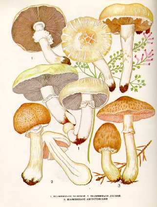

1. ШАМПИНЬОН ПОЛЕВОЙ.
Встречается на пастбищах, лесных полянах, в садах и парках с мая до поздней осени, большими группами.
Шляпка его достигает
Пластинки свободные, у молодых белые, у зрелых красноватые, шоколадно-бурые, черные. Споровый порошок темно-бурый.
Ножка до
Гриб съедобен, третьей категории. Используется так же, как и шампиньон обыкновенный. Шампиньон нужно отличать от бледной поганки - смертельно ядовитого гриба
2. ШАМПИНЬОН ЛЕСНОЙ.
Растет в хвойных и смешанных лесах, преимущественно в ельниках с июля до поздней осени, одиночно и группами. При благоприятных условиях плодовые тела его появляются на одном месте несколько раз за лето, через каждые 12-15 дней.
Шляпка до
Пластинки свободные, частые, сначала белые или грязно-розовые, потом темно-коричневые. Споровый порошок белый.
Ножка до
Съедобен, четвертой категории. Употребляется вареным
3. ШАМПИНЬОН АВГУСТОВСКИЙ
Появляется в августе - сентябре преимущественно в хвойных и смешанных лесах, часто около муравьиных куч.
Шляпка до
Пластинки свободные, у молодых грибов серые, потом розово-серые и, наконец, шоколадного цвета. Споровый порошок буровато-фиолетовый.
Ножка 5-
Гриб съедобен. Используется так же, как и другие виды шампиньонов.